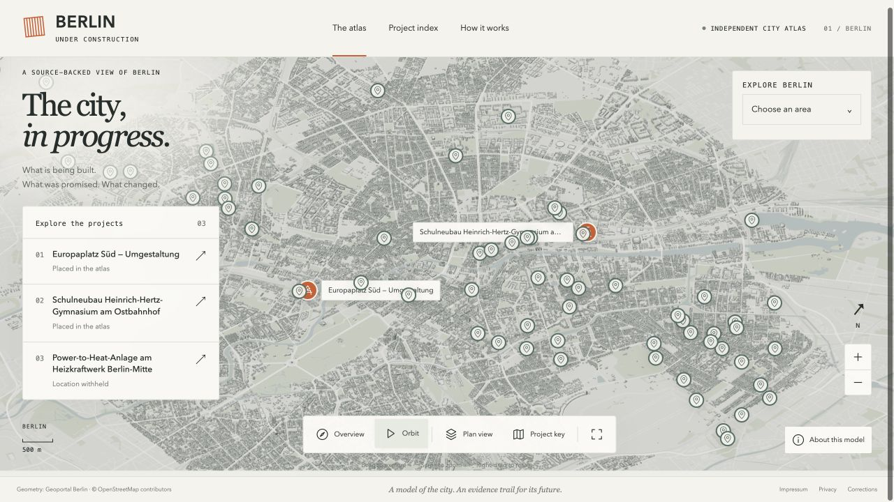

Berlin / spatial index
A city in progress.
A record of change.
3full dossiers
150basic register listings

Existing product capture · architectural geometry, not observed progress
Geometry: Geoportal Berlin · © OpenStreetMap contributors
Geometry: Geoportal Berlin · © OpenStreetMap contributors